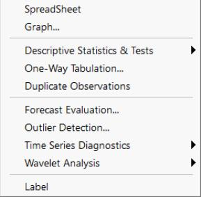

Series Views Overview  The series view drop-down menu is divided into four blocks. The first block lists views that display the underlying data in the series. The second and third blocks provide access to general statistics (the views in the third block are mainly for time series analysis). The fourth block allows you to modify and display the series labels.